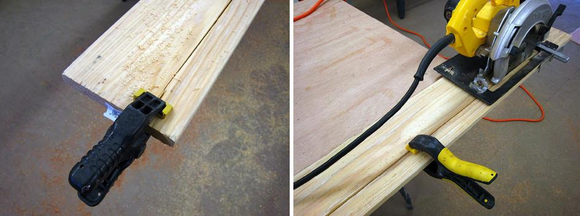

| Stringers | Menu Previous Page Next Page |
|

After cutting a couple feet into the board, stop cutting, allowing the blade to stop spinning completely before moving the saw, and attach a clamp near the beginning of the cut. This will keep the cut section from drooping as the cut gets longer into the board. Near the end of the cut, repeat the procedure and add another clamp. At the end, cut through the board before stopping.
|
|